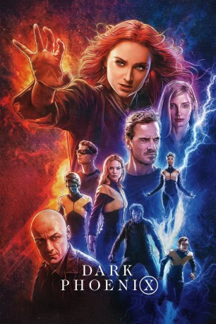

gesehen am 09.09.2019
gesehen am 09.09.2019Alternativ: Dark Phoenix (Englischer Titel) gesehen am 09.09.2019
 
 IMDB-Wertung: 6.0 / 10
IMDB-Wertung: 6.0 / 10  Tomatometer: 23
Tomatometer: 23  Metascore:
Metascore: 
Etwa zehn Jahre nachdem sie es mit dem mächtigen Mutanten Apocalypse aufgenommen haben, sind die X-Men rund um Charles Xavier zu Helden geworden. Doch der damit einhergehende Ruhm steigt dem an den Rollstuhl gefesselten Telepathen zu Kopf, so dass er seine Schützlinge auf immer gefährlichere Missionen schickt. Für ihren jüngsten Auftrag schickt er die X-Men ins Weltall, wo sie verunglückte Astronauten retten sollen. Doch dabei wird ihr Raumschiff von einer Sonneneruption getroffen, die Jean Grey zwar absorbieren und umlenken kann, doch durch die enorme Energie erwacht eine mysteriöse Macht in ihr: die Phoenix Force. Jeans neue Kräfte lassen sich nur schwer kontrollieren und rufen schließlich auch eine außerirdische Gestaltwandlerin auf den Plan, die Jagd auf sie macht…
Jahr: 2019
Dauer: 113 Minuten
FSK: 12
Land: USA Studio: Twentieth Century FoxTonspuren: DTS - ,
Untertitel: Deutsch, Englisch,
Auflösung: 1080p (1920x800) Größe: 6215 MB
Genre: Action, Sci-Fi, Abenteuer
Regisseur: Simon Kinberg
Drehbuch: Simon Kinberg, Stan Lee, Jack Kirby, Chris Claremont, John Byrne
Soundtrack: Hans Zimmer
Darsteller:
 James McAvoy als Professor Charles Xavier
James McAvoy als Professor Charles Xavier Michael Fassbender als Erik Lehnsherr / Magneto
Michael Fassbender als Erik Lehnsherr / Magneto Jennifer Lawrence als Raven / Mystique
Jennifer Lawrence als Raven / Mystique Nicholas Hoult als Hank McCoy / Beast
Nicholas Hoult als Hank McCoy / Beast Tye Sheridan als Scott Summers / Cyclops
Tye Sheridan als Scott Summers / Cyclops Alexandra Shipp als Ororo Munroe / Storm
Alexandra Shipp als Ororo Munroe / Storm Evan Peters als Peter Maximoff / Quicksilver
Evan Peters als Peter Maximoff / Quicksilver Kodi Smit-McPhee als Kurt Wagner / Nightcrawler
Kodi Smit-McPhee als Kurt Wagner / Nightcrawler Jessica Chastain als Vuk
Jessica Chastain als Vuk Scott Shepherd als John Grey
Scott Shepherd als John Grey Ato Essandoh als Jones
Ato Essandoh als Jones Brian d'Arcy James als President of the United States
Brian d'Arcy James als President of the United States Halston Sage als Dazzler
Halston Sage als Dazzler Daniel Rindress-Kay als NASA Tech
Daniel Rindress-Kay als NASA Tech Raphael Grosz-Harvey als NASA Tech
Raphael Grosz-Harvey als NASA Tech Andrew Stehlin als Ariki
Andrew Stehlin als Ariki Frank Fontaine als Dive Bar Elderly Man
Frank Fontaine als Dive Bar Elderly Man Alain Chanoine als Military Train Guard
Alain Chanoine als Military Train GuardDatei: X:\Comic-Filme\X-Men\X-Men 10 - Dark Phoenix (2019, FSK12, 1920x800).mkv seit 31.08.2019
Festplatte: Comicverfilmungen+MusikCD
 Es gibt insgesamt 17 Filme in der Gruppe 'Comic-Filme\X-Men'
Es gibt insgesamt 17 Filme in der Gruppe 'Comic-Filme\X-Men'